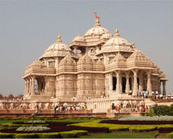
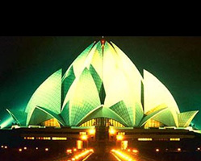
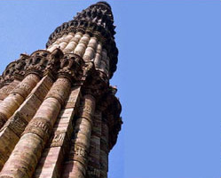
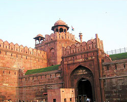
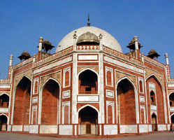
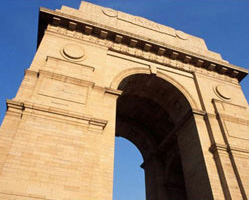
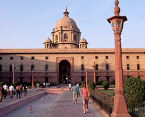

|
The capital of
India, Delhi, is the third largest city of India. A fusion
of the ancient and the modern, standing along the West
End of Gangetic Plain, Delhi, revels a picture rich in
culture, architecture and human diversity. It has rich
history, monuments, museums, galleries, gardens and exotic
shows, truly representing India. Delhi comprises of Old
Delhi and New Delhi, both very different from each other
but providing a rich blend of past and the present to
this capital city of India. The city is strewn with pieces
of Mughal and British architecture. Delhi has many hustling
and bustling bazaars, where you can find all sorts of
goods and items. The city is well-planned, there are trees
that line the spacious streets and imposing buildings
that reflect the progress of the city.
Visit Delhi and experience a fusion of power, politics,
invasions, and conquests & of free India. It is one
of the most enchanting cities in the world, luring visitors
from every corner of the globe to explore and discover
the exotic culture which still flourishes along the flows
of development. |
| |
|  |
Akshardham means the eternal, divine abode of the supreme God,
the abode of eternal values and virtues of Akshar
as defined in the Vedas and Upanishads where divine
bhakti, purity and peace forever pervade.
For the first time ever in the world witness the
heritage of India in all its facets, insights and
beauty at the Swaminarayan Akshardham through its
monument, exhibitions, verdant gardens and other
attractions. |
| |
|
|  |
Lotus Temple
Located in Kalkaji in the south of Delhi, it is lotus shaped and has rightly been given the name. It is made of marble, cement, dolomite and sand. It is open to all faiths and is an ideal place for meditation and obtaining peace and tranquility.
The lotus represents the Manifestation of God, and is also a symbol of purity and tenderness. Its significance is deeply rooted in the minds and hearts of the Indians. The Bahá'í Faith is a world religion whose purpose is to unite all races and peoples in one universal Cause and one common Faith. Bahá’is are the followers of Bahá’u’lláh, Who they believe is the Promised One of all Ages. |
| |
|
|  |
Qutab Minar:-
It is one of the prime attractions in Delhi, it
is regarded as bequest of Islamic culture in India.
It also represents the military might of the Turko-Afghan
Salve Dynasty ruling India during the 12th century.
This 73 meter-high-tower is believed to have been
built in 1193 A.D. by King Kutub-ud-din-Aibak to
celebrate the victory of the Afghan invader over
the Rajputs. Its five stories are graced with fine
sculptures made of sand stone. At the foot of the
tower, there stands a Mosque which was built in
1197. The tower was repaired for several times due
to the earthquake and lightning. |
| |
|
|  |
Red Fort:- Lal Quila or the Red Fort is
one of the elegant structures in Delh. It lies
on the riverbank of Yamuna, surrounded by a wall
of about 2.4 km in circumference and built of
red sandstone.
The construction of the Fort began when the Mughal
King Shah Jahan transferred his capital from Agra
to Delhi and was completed in 1648.
The highlighted structures include the Diwan-e-Am
(hall of public audience), the Diwan-e-Khas (hall
of private audience). Besides this is the Rang
Mahal, the water-cooled apartment for the royal
ladies. In the basement of the fort is a market
where several traditional Indian goods can be
purchased at nominal rates. The Red Fort also
has light and sound in the evenings. |
| |
|
|  |
Humayun's
Tomb:- Built in the 16th century as a memorial
to the Mughal emperor, this enormous piece of architecture
is said to have inspired Emperor Shajahan to construct
Taj Mahal in Agra. The tomb was built to dedicate
to Emperor Humayun by his widow, Haji Begum in A.D.
1565. The tomb was made of red stone, crowned with
the gorgeous marble dome.
|
| |
|
|  |
India
Gate:- India Gate is Located at the end of Rajpath
in New Delhi.Designed and built by the British architect
Lutyens, it was originally called "All India
War Memorial" in memory of Indian soldiers
who died in the campaigns of World War I, the North-West
Frontier operations and the 1919 Afghan Fiasco.
Names of the martyrs are inscribed on the walls
with the eternal flames honoring them. |
| |
|
|  |
Rashtrapati
Bhawan:- Rashtrapati Bhavan is the official residence
of the President of India. It is the former the
residence of the Viceroy during the British Raj.
Perching on the magnificent Raisina Hill, the grandiose
building comprises 340 rooms for several functions.
Visitors wishing to visit the building are supposed
to contact the deputy Military Secretary to The
President are allowed to visit the Durbar Hall,
Ashok Hall, the Dining Room and the Mughal Gardens
only. |
| |
|
|
|
|
| |
|
|
|
 |
|